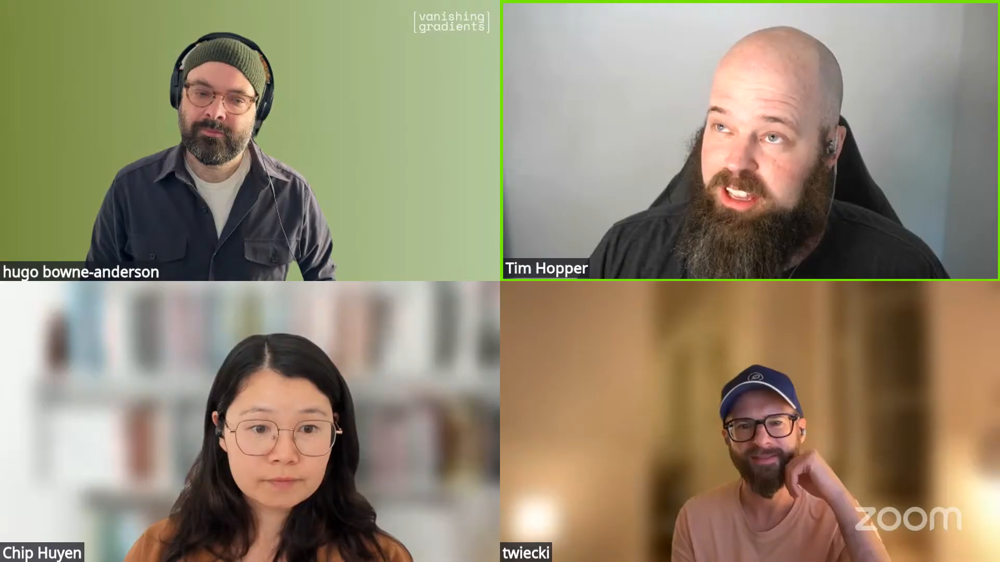
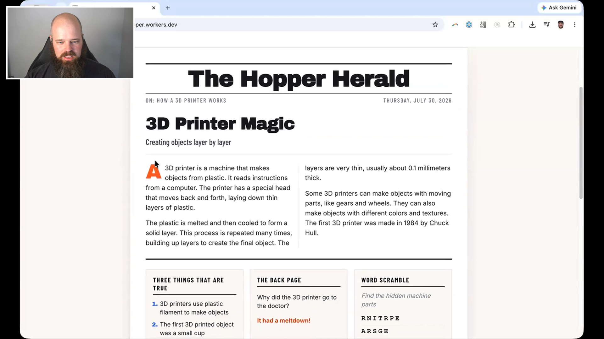
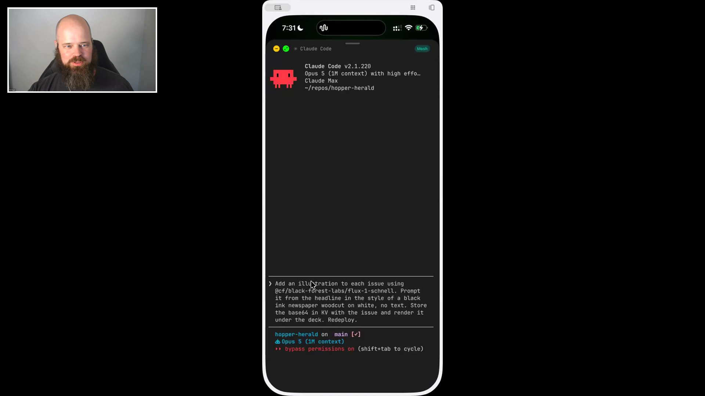
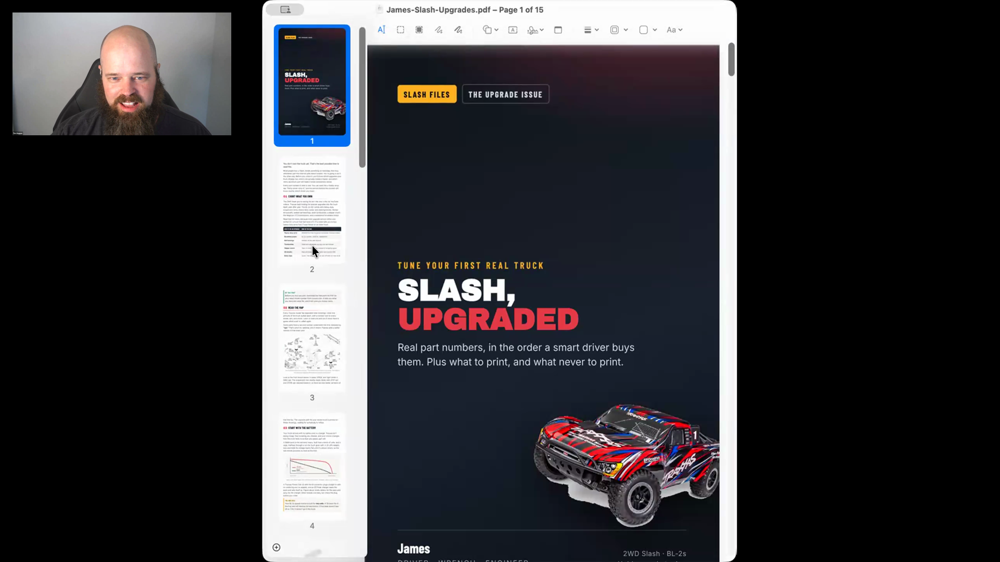

persistent phone agent sessions
Keep the agent and project on an available computer, reconnect from a phone, dictate detailed prompts, and have the completed work return through email.
 TIM HOPPER
ML PLATFORMS
PHONE-FIRST AGENTS
SIDE PROJECTS
TIM HOPPER
ML PLATFORMS
PHONE-FIRST AGENTS
SIDE PROJECTS
Tim builds and deploys real software while walking. Before this episode, he used Claude Code from his iPhone to build Hopper Herald, a website that generates illustrated magazines with articles, jokes, and puzzles. On stream, he gave the agent another feature to build, put his phone away, and asked it to email him when the work was finished. This is how Tim builds around raising four children: the agent stays focused on the project while he drops in with direction and judgment whenever a few minutes appear.

Tim has four young children. Long stretches for personal coding are scarce, but a project no longer has to fit inside one uninterrupted afternoon. Claude Code keeps the project context and continues working while Tim contributes direction when a few minutes appear.
Before the episode, Tim went for a walk and asked Claude Code to help him prepare. It proposed building the first version of Hopper Herald, then implemented and deployed the site while he kept walking.
At soccer practice he can send a few prompts, put the phone away, and return later. The agent's attention stays with the project even when Tim's attention moves back to his family.

"The agent kind of gives sustained focus to something and allows me to have much more intermittent focus."

"I wake up the next morning, and I don't have to remember to go check in on the agent."
Tim did not begin by designing a general publishing system. He worked with Claude Code until it produced a magazine he liked for his children, then captured that process in a skill.
A vague topic becomes a researched, illustrated issue, a screen-ready PDF, and a bifold booklet for an ordinary printer. Tim's eight-year-old used it to request an upgrade guide for a high-end remote-control car he did not yet own.
His Cloudflare skill grew differently: each deployment added another short gotcha, so the agent would not have to rediscover the same fix on the next small site.

"The constraint is not becoming how fast can you open PRs, it's how fast can you decide whether or not those PRs are a good idea."
Keep the agent and project on an available computer, reconnect from a phone, dictate detailed prompts, and have the completed work return through email.
Research a topic, find images, write and lay out an illustrated issue, render a PDF, and impose the pages into a printable booklet.
Send completion summaries and next steps through Resend so long-running work can return to Tim after he leaves the agent session.
The skills, prose rules, shell functions, aliases, and project shortcuts Tim opened during the episode.